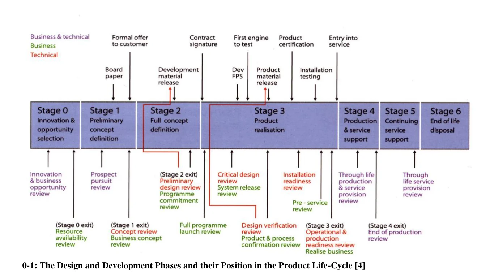
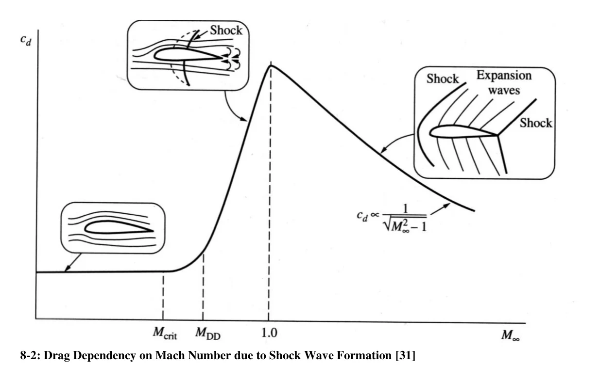
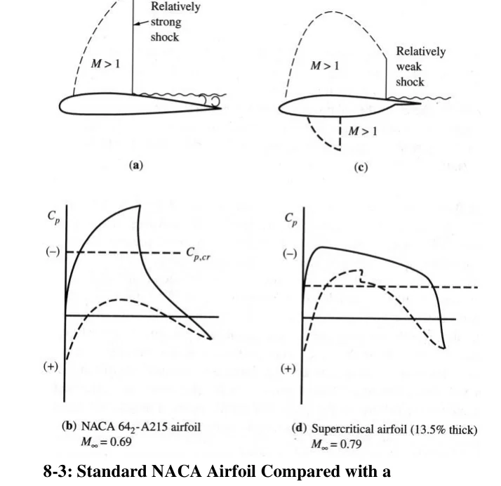
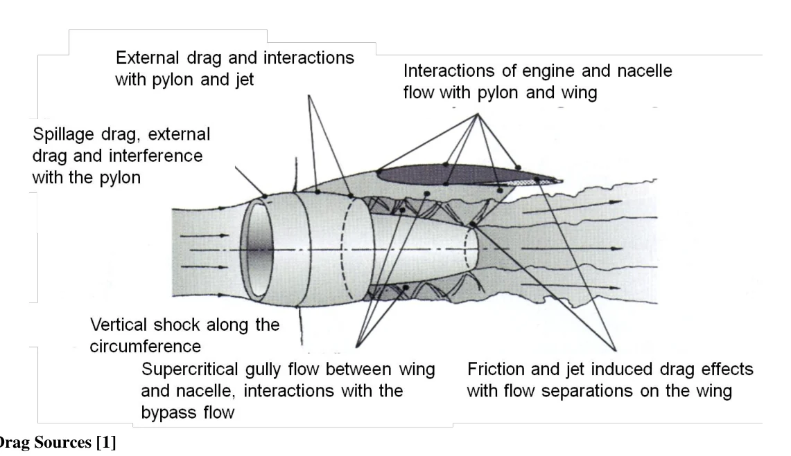

Die Zuschnitte stammen aus den eingebetteten Bildrechtecken des PDF, sind also seitengenau. Trotzdem bitte einmal durchscrollen: bei nebeneinander stehenden Abbildungen kann ein Rand mitlaufen. Melde mir einfach die Nummern, die nicht passen.

0-1 · S.12 · Karten: D01, P01 The Design and Development Phases and their Position in the Product Life-Cycle [4]
8-1 · S.83 · Karten: A07 Airfoil with Laminar / Turbulent Boundary Layer and Flow Separation [34]

8-2 · S.84 · Karten: A07 Drag Dependency on Mach Number due to Shock Wave Formation [31]

8-3 · S.85 · Karten: A07 Standard NACA Airfoil Compared with a Supercritical Airfoil at Cruise Conditions [31]

8-5 · S.86 · Karten: A01 Drag Sources [1]8-7 · S.89 · Karten: A06 S-Duct of the Boeing 727 [8]8-8 · S.89 · Karten: A06 Inlet Highlight Section for a Rear Integrated Engine [25]9-1 · S.90 · Karten: N07 Cowl Suction on the Inlet Lip of a Nacelle [1]9-2 · S.91 · Karten: N04 Stanhope Correlation [1]9-3 · S.92 · Karten: N07 Nacelle Forebody Force as Function of the Flight Mach Number [1]9-5 · S.93 · Karten: N03 Nacelle Inlet Profile Velocity Vectors [32]9-6 · S.96 · Karten: N06 Separate and Integrated Thrust Nozzle [1]9-7 · S.96 · Karten: N06 Forced Mixer (left) and Lobe Type Mixer (right) [1]9-11 · S.100 · Karten: N07 Nacelle Drag of a Typical Airliner [1]9-12 · S.102 · Karten: N08 Boattail Effect [39]9-13 · S.102 · Karten: N08 Deflection / Entrainment Effect [39]9-14 · S.103 · Karten: N08 Boattail Configurations [39]9-15 · S.105 · Karten: A05 Stagnation Point Location for Low and Medium Flight Mach Numbers at High Engine Speed and the Velocity Distrib9-16 · S.106 · Karten: A05 Movement of Nacelle Lip Stagnation Point Depending on Power Setting [1]9-18 · S.107 · Karten: R01 Effect of Thrust Reversal on Landing Ground Roll Distance [40]9-19 · S.108 · Karten: R02 Thrust Reverser Flow Field [1]9-21 · S.109 · Karten: R01 Ground Roll Analysis of a Typical Underwing Twin [25]9-22 · S.110 · Karten: R02 Bucket Door Reverser (top) and Cascade Door Reverser with Blocker Doors (bottom) [1]9-23 · S.110 · Karten: R02 Pivot Door Reverser [1]9-25 · S.112 · Karten: D06, N02 Typical Nacelle Geometry for a Turbofan Engine with Long Nacelle and Integrated Nozzle [1]9-26 · S.112 · Karten: T06 Pressure Distribution on an Engine Nacelle [39]9-27 · S.113 · Karten: T06 Drain Positions on an Engine Nacelle [39]10-2 · S.114 · Karten: Y01 Engine Mounting for Underwing Configuration [8]10-3 · S.115 · Karten: Y01 Rated Break Point Between Engine And Wing [8]10-4 · S.116 · Karten: Y01 Core Mount [25]10-5 · S.116 · Karten: Y01 Fancase Mount [25]10-6 · S.117 · Karten: Y03 Iso-Mach (=1.2) Surfaces between Pylon and Nacelle at Ma=0.78 [25]10-7 · S.118 · Karten: Y02 Pylon and Engine Mounts for Underwing Installation [30]10-8 · S.118 · Karten: Y02 Installations in the Pylon [5]10-10 · S.119 · Karten: Y03 Interactions Exhaust Jet with Pylon [1]10-11 · S.119 · Karten: Y03 Pylon and Wing Flow [41]11-1 · S.120 · Karten: A09 Pressure Distribution on the Wing [43]12-1 · S.121 · Karten: A09 Major Elements of Wing / Pylon / Nacelle Flow Field [44]12-2 · S.122 · Karten: A03 Installation Drag Definition [25]13-1 · S.124 · Karten: A08, X03 Variables, Describing the Positioning of the Engines with RFN-Mount13-3 · S.126 · Karten: A08 Pressure Distribution for RFN Configuration [25]13-4 · S.126 · Karten: A08 Pressure Distribution on a Fuselage with Close Arranged Nacelles [25]13-5 · S.128 · Karten: X03 Vertical and Longitudinal Positioning of RFN-Integrated Engines of Existing Aircraft with Closely Coupled Nace13-6 · S.128 · Karten: X03 Supporting Structure for RFN Mounted Engines [29]13-7 · S.130 · Karten: X02 Effect of Lateral Position on Wing Structure [18]13-8 · S.130 · Karten: X02 Flutter Tendency of the Wing as Function of the Engine Position [18]13-9 · S.131 · Karten: N09 Ground Vortex [1]13-10 · S.132 · Karten: X04 Influence of the Engine Position on Interference Drag [51]13-11 · S.133 · Karten: X02 Influence of the Lateral Position of the Engine on the Critical Mach Number [18]13-12 · S.133 · Karten: X02 Influence of the Lateral Position of the Engine on the Induced Drag [18]13-17 · S.136 · Karten: X07 Debris Spread Angles After Rotor Burst [53]13-18 · S.136 · Karten: X07 Calculation of Dry Bays [53]13-19 · S.137 · Karten: X07 Rotor Burst Considerations for Airplanes with Four Engines [52]13-20 · S.137 · Karten: X01 Variables, Describing the Positioning of the Engines with UWN-Mount [65]13-21 · S.138 · Karten: X04 Examples of Vertical and Horizontal Positioning of the Engines on Real Airplanes13-25 · S.141 · Karten: X01 Minimum Banking Angle During Take-Off or Landing [2]13-26 · S.142 · Karten: X05 Dependency of Fuel Consumption Improvement on Installation [45]13-27 · S.142 · Karten: X05 Engine Installation Effects [46]13-31 · S.144 · Karten: X05 Spanwise Lift Distribution [49]13-32 · S.146 · Karten: X06 OWN Integration, VFW 614 [13]13-33 · S.146 · Karten: X06 OWN Configuration Beriev BE200 [13]13-34 · S.146 · Karten: X06 Flow Field around an Overwing Installed Engine Nacelle [50]14-2 · S.150 · Karten: PR1 Normal force as a result of the vertical velocity change of the inflow14-5 · S.153 · Karten: PR2 Airflow Behind the Propeller [61]14-6 · S.154 · Karten: PR2 Addition of LEX (leading edge extensions) to modify the wing’s geometry and reduce interference drag [59]14-7 · S.154 · Karten: PR2 Measures to reduce interference drag: positioning the thrust line on top of the wing’s airfoil, giving the pro14-10 · S.155 · Karten: PR3 Variables, Describing the Positioning of the Engines with TPW-Mounting [65]14-11 · S.156 · Karten: PR3 Propeller Ground Clearance of Real Airplanes with TPW-Mounted Engines [65]